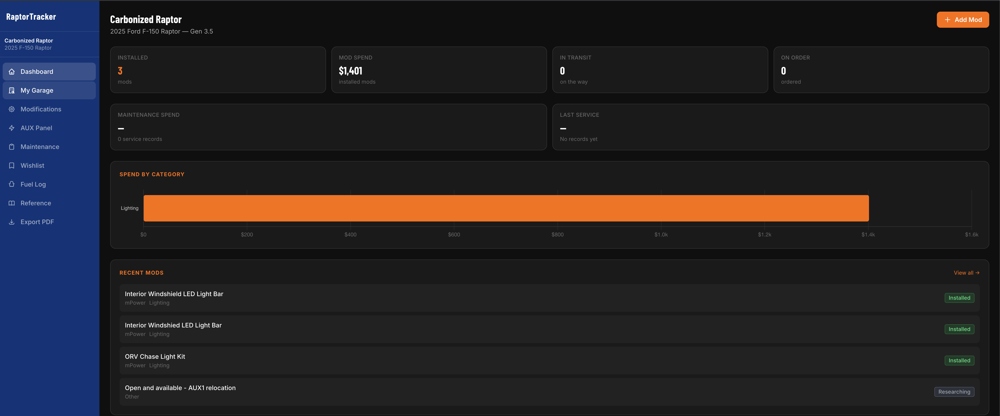
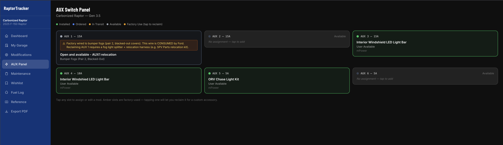
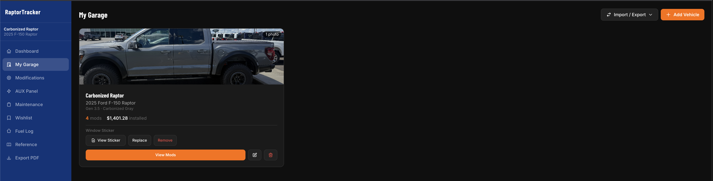

Every part, every service,
every switch.
A build tracker for Ford Raptors that runs on your own server. Mods, AUX switch capacity, maintenance forecasting, fuel economy, and what the truck has actually cost you — in one place, owned by you.

Built for one truck in particular
Generic vehicle apps don't know your truck has six switches at specific amperages, or that airing down matters. These are the parts that only make sense for a Raptor.
AUX capacity planning
Factory-accurate switch layouts per generation. Assign mods to switches, record amp draw, and see current load, planned load from your wishlist, and remaining headroom against the fuse rating.
Flagged tight past 80% of the fuse and over above it — before you wire it, not after.
Forum-ready build sheets
Turn your installed mods into a list you can paste straight into a forum post or signature — BBCode, Markdown, or plain text, grouped by category.
Your VIN, purchase price, and insurance details are never included, and prices are off by default.
Unknown is reported, not assumed
A switch with an unrecorded amp draw reads unknown, not fine. Trip totals say how many outings lack odometer readings instead of counting those miles as zero.
A forecast with too little mileage history is withheld rather than guessed.
Your build, ready to post
The list you already maintain by hand in a forum signature, generated from records you were keeping anyway. AUX assignments included — the part nothing else can produce.
How it worksWhat it tracks
Capture what happens to the truck, then get answers back out of it.
- ModificationsPart, brand, vendor, cost, install date and mileage, photos, receipts, and per-switch AUX labels.
- MaintenanceService records with dealership / independent / DIY attribution, invoices attached, and mileage or time-based intervals.
- ForecastingProjects service intervals against how fast you actually drive, so "due in 3,400 mi" becomes a date.
- Fuel & MPGPer-fill economy, trend over time, and your real average against the factory EPA rating.
- Trail logOutings with trail, difficulty, terrain, aired-down PSI, tire set, damage, and photos.
- Cost of ownershipAcquisition, financing, mods, maintenance, and fuel unified into cost per mile.
- Wishlist & budgetPlanned purchases against a monthly budget, with electrical load checked before you buy.
- Tire & wheel setsMultiple sets with specs, cost, and miles run on each.
- Warranty & complianceFactory and extended warranties, registration, inspection, and insurance deadlines.
- RecallsOpen NHTSA campaigns for your model year, convertible into a tracked service record.
- DocumentsThe glovebox paperwork — registration, insurance, window sticker — with expiry tracking.
- RemindersA daily digest by email or Discord/Slack webhook. Off by default.
- Import & exportCSV in and out, PDF build sheets, and full ZIP backup and restore.
- Works on your phoneInstallable PWA with a quick-add screen for logging a fill-up at the pump.
A look around
Three of the themes ship built in, including a dark FordRaptorForum style.


Run it yourself
One box, one command. It installs Node, sets up a service, generates a password, and puts nginx in front of it.
- Any Linux server — a spare mini PC, a VM, or a Raspberry Pi. Node 20.19+ or 22.12+.
- Clone and run the installer as root. It handles the rest.
- Set a real password under Settings → Account on first sign-in.
# Grab the latest release
git clone https://github.com/breed007/RaptorTracker.git
cd RaptorTracker
# Install as a service, behind nginx
sudo bash install.sh
Prefer containers? There's a Dockerfile and docker-compose.yml in the repo,
plus Linux and
Docker deployment guides.
What this is, plainly
- Self-hosted and single-owner. One password, your server, your database file. There is no cloud service, no account to create, and nothing phones home.
- Your data is yours. Everything lives in one SQLite file plus an uploads folder. Back it up as a ZIP from inside the app, or just copy the directory. Export any record type to CSV whenever you like.
- It expects you to run a server. If you've never used SSH, this will be a real afternoon. The installer does the heavy lifting, but it's still a machine you have to maintain.
- Not affiliated with Ford. Reference specs come from public sources. Torque values and wiring details are not included, because those live in Ford's copyrighted workshop manual.
- MIT licensed. Fork it, change it, run it however you want.